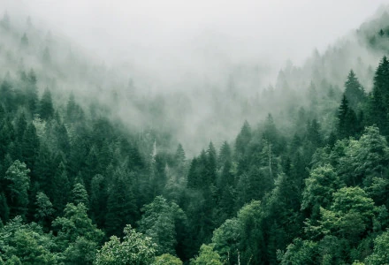

Forests
Definition
There is no universally accepted definition of a mountain. Elevation, volume, relief, steepness, spacing and continuity have been used as criteria for defining a mountain. In the Oxford English Dictionary a mountain is defined as "a natural elevation of the earth surface rising more or less abruptly from the surrounding level and attaining an altitude which, relatively to the adjacent elevation, is impressive or notable."
There are three broad categories of definitions of forest in use: administrative, land use, and land cover. Administrative definitions are based primarily upon the legal designations of land, and commonly bear little relationship to its vegetation: land that is legally designated as a forest is defined as such even if no trees are growing on it. Land-use definitions are based on the primary purpose that the land serves. For example, a forest may be defined as any land that is used primarily for production of timber. Under such a land-use definition, cleared roads or infrastructure within an area used for forestry—or areas that have been cleared by harvesting, disease, or fire—are still considered forests, even if they contain no trees.
Etymology
The word forest derives from the Old French forest (also forès), denoting "forest, vast expanse covered by trees"; forest was first introduced into English as the word denoting wild land set aside for hunting without necessarily having trees on the land. Possibly a borrowing, probably via Frankish or Old High German, of the Medieval Latin foresta, denoting "open wood", Carolingian scribes first used foresta in the capitularies of Charlemagne, specifically to denote the royal hunting grounds of the king.
The word was not endemic to the Romance languages, e.g., native words for forest in the Romance languages derived from the Latin silva, which denoted "forest" and "wood(land)" (cf. the English sylva and sylvan; the Italian, Spanish, and Portuguese selva; the Romanian silvă; the Old French selve). Cognates of forest in Romance languages—e.g., the Italian foresta, Spanish and Portuguese floresta, etc.—are all ultimately derivations of the French word.
Evolutionary history
The first known forests on Earth arose in the Late Devonian (approximately 380 million years ago), with the evolution of Archaeopteris, which was a plant that was both tree-like and fern-like, growing to 10 metres (33 ft) in height. It quickly spread throughout the world, from the equator to subpolar latitudes; and it formed the first forest by being the first species known to cast shade due to its fronds and by forming soil from its roots. Archaeopteris was deciduous, dropping its fronds onto the forest floor, the shade, soil, and forest duff from the dropped fronds creating the first forest. The shed organic matter altered the freshwater environment, slowing its flow and providing food. This promoted freshwater fish.